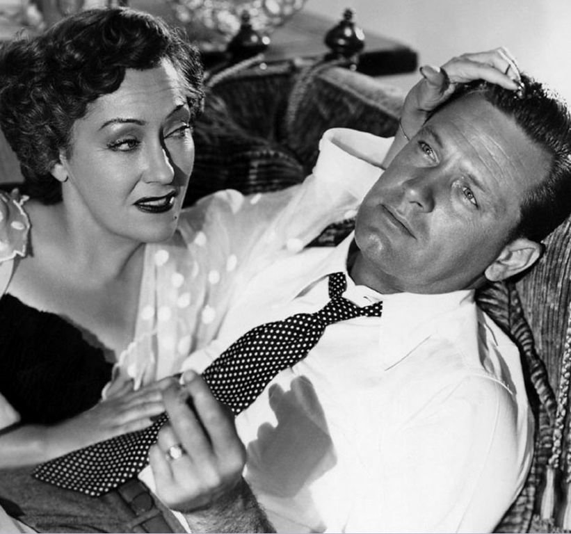

Sunset Boulevard, Publicity Still (Gloria Swanson and William Holden)
Billy Wilder · 1950 · Publicity still, black and white
In copyright. Look and learn: shown for study, not for download.
Billy Wilder recalled that the project began as a comedy, possibly for Mae West. He telephoned Pola Negri and could not follow her accent, and he and Charles Brackett called on Mary Pickford but left before describing the plot, realising she would take a part involving an affair with a man half her age as an insult. Gloria Swanson was not looking for a comeback but became intrigued when Wilder discussed the role with her. Montgomery Clift had been considered for the part William Holden played.